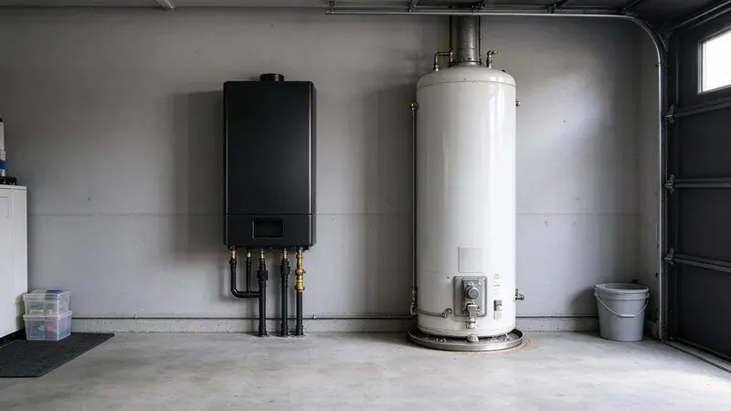

Plumbing Tips & Updates From BGV Plumbing
 15Oct, 2026
15Oct, 2026Slab Leak Warning Signs Every Tennessee Homeowner Should Know
Many Tennessee homes sit on concrete slabs with water lines buried underneath. Here is how to catch a slab leak early.
 6Oct, 2026
6Oct, 2026How to Protect Your Pipes Before the Next Tennessee Freeze
Winter freezes can cause serious damage to your Tennessee home's plumbing. Learn how to avoid it.
 27Sep, 2026
27Sep, 2026Hard Water in Tennessee: When a Water Softener Pays for Itself
Discover how a water softener can save you money and extend the life of your plumbing system in Tennessee.

18Sep, 2026Tankless vs. Tank Water Heaters: What Works Best in Tennessee
Discover if a tankless or traditional tank water heater is the right choice for your Tennessee home.
 9Sep, 2026
9Sep, 2026Kitchen Sink Backups: Causes, Prevention and Quick Solutions
Grease, coffee grounds and hard water scale team up inside kitchen drains. Here is how to clear a backup and prevent the next one.
 31Aug, 2026
31Aug, 2026Underground Pipe Damage: Common Causes and Modern Repair Solutions
Underground pipe problems can be a homeowner's worst nightmare, but modern solutions offer hope.
 22Aug, 2026
22Aug, 2026Hydro Jetting vs. Snaking: Which Drain Cleaning Method Do You Need?
Learn the best drain cleaning method for your home, hydro jetting or snaking.
 13Aug, 2026
13Aug, 2026Why a Sewer Camera Inspection Belongs on Every Tennessee Home Inspection
Don't overlook the hidden pipes when buying a home in Tennessee. A sewer camera inspection is a vital part of any thorough home inspection.
Have a plumbing question we did not cover?
Our team is happy to talk it through and give you a straight answer.